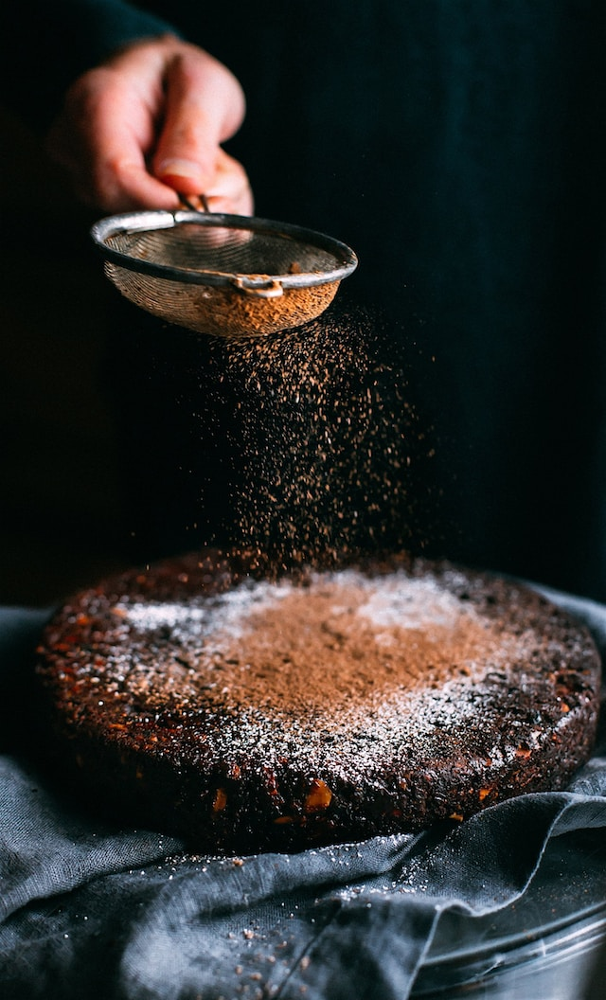

Chocolate Truffle Cake

Photo by lindsay Cotter on Unsplash
Super juicy chocolate cake
Double chocolate cake for all people who cannot get enough of chocolate
Ingredients
- 100g Giandor-Noir Chocolate
- 250g dark chocolate
- 3 eggs
- 80g icing sugar
- 30g corn starch
- 3 tablespoons of whisky
- 15g cacao powder
- 120g double cream
Recipe
- Melt the Giandor-Noir and 100g of the dark chocolate over heated water
- Mix together the eggs and sugar until it becomes fluffy
- Then add the corn starch, cacao powder and mix gently
- Add the melted chocolate, whisky and cream to the mixture and mix gently
- Fill the mixture into a cake form and bake for 40 at 180°C
- Use the remaining 150g of dark chocolate, melt it and use it as cake glaze
Return to main page